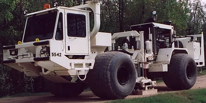

Adquisición sísmica
Los parámetros de adquisición de los proyectos requieren un análisis técnico y practico, nuestros técnicos basados en estos parámetros y los equipos disponibles diagnostican si cumplen las condiciones contractuales y posibles recomendaciones, las pruebas y su análisis determinan la viabilidad del proyecto de acuerdo a las condiciones técnicas de sus equipos, condiciones del terreno, los equipos y software usados TEST IT FILE muestran resultados confiables de las pruebas realizadas.
- Sísmica 2D / 3D
- Tipo de fuente y equipos
- Cobertura y capacidad